OYAA × 浦添パルコ 3DCG教室 Chapter 01
はじめての
3Dスカルプト！
ドーナツをつくろう
2025.4.5（土）
01 / 16S01 ドーナツをつくろう ／ 浦添パルコ 3DCG教室
OVERVIEW
OYAA × 浦添パルコ 3DCG教室
この講座では、iPadアプリ Nomad Sculpt を使って3Dスカルプトモデリングを体験します。全8回を通して、自分だけのオリジナルカード（オリカ）を3DCGで作り上げることが最終目標です。
プログラムは第1期（スカルプト入門）と第2期（カード制作）の2段階構成です。
第1期 スカルプト＆モデリング基礎 4/5 – 5/17
S014/5ドーナツをつくろう
S024/12リッチドーナツ＆質感
S035/10ちびキャラをスカルプト
S045/17ライティング＆ポスター印刷
第2期 デザイン＆カード制作 6/7 – 7/12
S056/7オリカをデザインしよう
S066/14デジタルカードを作ろう
S077/5飛び出す3Dトレカ
S087/12仕上げ・発表・修了
02 / 16S01 ドーナツをつくろう ／ 浦添パルコ 3DCG教室
🙂
INSTRUCTOR
大石 こう
KO OISHI
沖縄県立芸術大学 非常勤講師
OYAA × 浦添パルコ 3DCG教室
OYAA × 浦添パルコ 3DCG教室
03 / 16S01 ドーナツをつくろう ／ 浦添パルコ 3DCG教室
SCHEDULE
今日の流れ
1.
導入・お話
3DCGってなに？ ソフトの紹介
導入
2.
説明・デモ
3Dの仕組みとスカルプトの概念を学ぶ
講義
3.
実習：ドーナツをつくろう！
トーラス読み込み → スカルプト → マスク処理 → 保存 → マテリアル
演習
4.
まとめ・振り返り
提出・振り返り・次回予告
まとめ
04 / 16S01 ドーナツをつくろう ／ 浦添パルコ 3DCG教室
LECTURE 01
3DCGってなに？
3DCG
3D の空間をコンピュータの中に作り、静止画や映像として出力する技術。「3D Computer Graphics」の略。
3Dモデルは点・辺・面で構成され、そこにマテリアル（質感）とライト（光）を加えることで、写真のようなリアルな映像が生まれる。
映画・ゲーム・建築・医療・デジタルアートなど、幅広い分野で使われている。
- →映像・映画：VFX、フルCGアニメーション
- →ゲーム：リアルタイム3Dグラフィックス
- →建築・設計：3Dパース、BIM
- →デジタルアート：インスタレーション、生成アート
- →プロダクト設計：工業製品の試作・検証
05 / 16S01 ドーナツをつくろう ／ 浦添パルコ 3DCG教室
LECTURE 023Dってなんだ？
3Dってなんだ？
データになる立体空間
コンピュータの中の3D空間は XYZ 座標で定義される。現実の「たて・よこ・おくゆき」がそのまま数値になったもの。
ポリゴンメッシュ
最も広く使われる立体の表現方法。頂点（Vertex）を辺（Edge）でつなぎ、面（Face / Polygon）で空間を囲んで形を作る。面の数（ポリゴン数）が多いほど、なめらかな形を表現できる。
点 Vertex
XYZ 座標をもつ空間上の点
辺 Edge
点と点をつないだ直線
面 Face / Polygon
辺で囲まれた平面。メッシュの最小単位
06 / 16S01 ドーナツをつくろう ／ 浦添パルコ 3DCG教室
LECTURE 033Dってなんだ？
3Dってなんだ？
空間の表現の仕方はひとつじゃない
ポリゴン
メッシュ
メッシュ
POLYGON MESH
点・辺・面で構成。最も広く使われる方法。ゲーム・映画・スカルプト、すべてに使われる。
今日はコレ
点群
POINT CLOUD
空間を無数の点の集まりで記録する方法。3DスキャナやLiDAR（ライダー）で取得される。面は持たない。
Gaussian
Splatting
Splatting
3D GAUSSIAN SPLATTING
点群を進化させた新しい手法（2023年〜）。各点を楕円体で表現し、リアルな見た目を高速に再現できる。
NURBS / SDF
NURBS / SIGNED DISTANCE FIELD
数式で滑らかな曲面を定義する。工業製品設計や CAD に使われる。ポリゴンより高精度。
表現方法によって得意な用途が異なる。Nomad Sculpt で扱うのはポリゴンメッシュ。
07 / 16S01 ドーナツをつくろう ／ 浦添パルコ 3DCG教室
LECTURE 04
ソフトウェアのいろいろ
AUTODESK
映画・アニメ・ゲーム制作の業界標準。アニメーション・リギングに強い。
OPEN SOURCE / FREE
無料で使えるオールインワンツール。モデリング・レンダリング・アニメーションすべて対応。
MAXON
スカルプト専用のプロツール。フィギュア原型やゲームキャラクター制作に多用される。
SIDEFX
プロシージャルモデリングとVFXに特化。映画の煙・爆発・波などのシミュレーションを生成する。
EPIC GAMES
ゲームエンジン兼映像制作ツール。リアルタイムでフォトリアルな3D映像を出力できる。

iPadアプリ
iPadだけで動くスカルプトツール。Apple Pencil で直感的に使えるプロ品質のアプリ。
今日はコレ
08 / 16S01 ドーナツをつくろう ／ 浦添パルコ 3DCG教室
LECTURE 05
3DCGの制作の流れ
1
モデリング
形を作る
2
リギング
骨組みを入れる
3
アニメーション
動きをつける
4
マテリアル
質感・色を定義
5
ライティング
光を設置する
6
レンダリング
画像として出力
7
コンポジット
仕上げ・合成
赤い番号が今日の授業で体験するステップ。まずは「形を作る」と「色をつける」ところから始める。
09 / 16S01 ドーナツをつくろう ／ 浦添パルコ 3DCG教室
LECTURE 06
モデリングについて
スカルプト
SCULPT MODELING
粘土をこねるようにブラシで形を変える。有機的なキャラや生物の造形に強い。ハイポリ状態で作業する。
今日はコレ
ポリゴン
モデリング
モデリング
POLYGON MODELING
面を一枚ずつ編集して形を作る。建物・メカ・ハードサーフェスに強い。ゲームモデルの基本。
プロシージャル
PROCEDURAL
数式やルールで形を自動生成する。Houdini が得意とする手法。都市・自然・群衆の生成に使う。
AI モデリング
TEXT-TO-3D
テキストや画像の指示から AI が3Dモデルを生成する。2023年以降に急速に発展している手法。
スカルプトはポリゴンモデリングの一手法。面の数が非常に多いハイポリ状態で作業する。
10 / 16S01 ドーナツをつくろう ／ 浦添パルコ 3DCG教室
LECTURE 07
スカルプトについて
スカルプトの仕組み
ブラシで頂点（Vertex）を動かし、形を変える手法。「盛る」「削る」「なめらかにする」など用途別ブラシを使い分ける。
- ▶Clay：粘土を盛るように面を押し出す
- ▶Inflate：全方向に膨らませる
- ▶Flatten：平らに押しつぶす
- ▶Smooth：でこぼこを均す
- ▶Mask：選択範囲を保護・切り出す
ハイポリ（高ポリゴン数）
スカルプトは面の数が非常に多い状態で作業する。細かいしわや凹凸まで表現できる反面、データが重くなる。
⚠️
こまめに保存しよう
Nomad Sculpt は自動保存しない。アプリが落ちると作業が消える。10分に1回の保存を習慣に。
11 / 16S01 ドーナツをつくろう ／ 浦添パルコ 3DCG教室
PRACTICE 01
アプリを開いてみよう
1
Nomad Sculpt を起動する
iPad のホーム画面からアプリを開く。最初に球（Sphere）が表示される。
2
Sphere を削除する
Scene パネルで Sphere を選んでゴミ箱アイコンをタップ。
3
Torus（トーラス）を追加する
「＋」→「Primitive」→「Torus」を選択。ドーナツ形の基本形状が読み込まれる。
+ → Primitive → Torus → Validate
4
ブラシで形を整える
Clay・Inflate・Flatten ブラシを使い、ドーナツらしいシルエットに仕上げる。「大きい形から、細部へ」の順で。
12 / 16S01 ドーナツをつくろう ／ 浦添パルコ 3DCG教室
PRACTICE 02
マスク処理でチョコソースを再現しよう
⚡ 技術ハイライト — 今日のメインテクニック
マスクとは？
メッシュの「一部だけ」を選択して保護・操作する機能。今回はマスクを切り出し範囲の指定として使う。
マスクした領域を Extract することで、選択部分を別パーツ（新しいメッシュ）として独立させられる。
1
Mask ブラシで塗る
チョコにしたい部分をなぞる。Mask Blur で境界を調整できる。
2
Extract → New Mesh
メニューから Extract を実行。マスク部分が新しいメッシュとして分離される。
Extract → New Mesh
3
パーツに名前をつける
Scene パネルで分離されたメッシュを選択し、名前を変更する。
donut_choco
13 / 16S01 ドーナツをつくろう ／ 浦添パルコ 3DCG教室
PRACTICE 03
保存しよう
💾
こまめに保存することが大切
Nomad Sculpt は自動保存しない。アプリが落ちると保存していない作業はすべて消える。作業中はこまめに保存する習慣をつけよう。
☰ → Files → 上書き保存
📁
ファイルの命名ルール
ファイル名には必ず自分の名前を入れること。先生のファイルと混ざらないようにするため。
名前_01_donut 例：oishi_01_donut
14 / 16S01 ドーナツをつくろう ／ 浦添パルコ 3DCG教室
PRACTICE 04
色を付けよう
マテリアルとは？
3Dオブジェクトの色・質感・光の反射を定義するデータ。同じ形でも、マテリアルを変えると全く別の物に見える。
- ▶アルベド（Albedo）：表面の基本色
- ▶粗さ（Roughness）：ツヤあり ↔ マット
- ▶金属感（Metallic）：金属らしい反射
1
パーツを選択する
Scene パネルで色をつけたいパーツを選ぶ。
2
マテリアルパネルを開く
右メニューのブラシアイコン → Material タブを開く。
3
アルベドで色を変える
Albedo のカラーパレットをタップして、ドーナツらしい色（きつね色など）を選ぶ。
4
チョコパーツにも色をつける
Scene でチョコパーツを選び直して、チョコらしい茶色のマテリアルを設定する。
15 / 16S01 ドーナツをつくろう ／ 浦添パルコ 3DCG教室
WRAP-UP
まとめ・振り返り
- スカルプトという手法で 3DCG を体験した
- ドーナツ（トーラス）を3Dで完成させた
- マスク → メッシュ分離ができた
- マテリアルで色をつけた
- 名前をつけて保存・提出できた
次回（4/12）：リッチドーナツ＆質感
マテリアルをさらに深める。光沢・粗さ・金属感を操り、同じ形が全く別の質感に変わることを体験する。ちびキャラ発想シート（X01）も配布します。
マテリアルをさらに深める。光沢・粗さ・金属感を操り、同じ形が全く別の質感に変わることを体験する。ちびキャラ発想シート（X01）も配布します。
16 / 16S01 ドーナツをつくろう ／ 浦添パルコ 3DCG教室